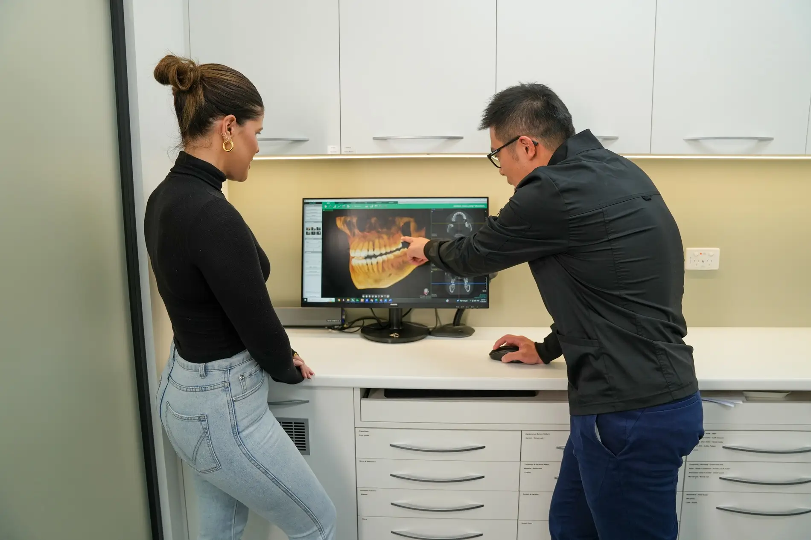
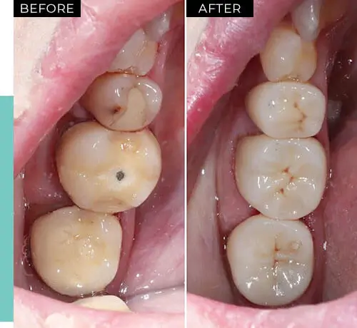

Dental crown
Dental crowns, made of superior strong ceramic material, wrap around the weakened tooth like a helmet.
- For
- A tooth weakened by decay, a crack or a fracture
- Also
- A porcelain onlay may suit

 5.0 from 360+ Google reviews
5.0 from 360+ Google reviewsJust like everything else in the world, teeth, after years of service, will start to break down.
The most common reasons for a tooth breaking down are:
Once a significant amount of natural tooth structure is missing, the remaining tooth structure is weakened.
A dental crown or porcelain onlay will be the ideal treatment option for the long survival of the tooth.
Broken a tooth today? See broken teeth or our emergency dental care page.
A crown protects a tooth you still have. A bridge replaces one that is missing.
Dental crowns, made of superior strong ceramic material, wrap around the weakened tooth like a helmet.
A bridge is an option to replace missing teeth. It consists of two crowns going on top of your natural teeth with a false crown (pontic) in the middle.
It literally bridges the gap and maintains the integrity of the two neighbouring teeth, especially when they are heavily filled.
There are many different types of crown, ranging from gold to many different types of white crowns.
The material chosen is based on:
Your dentist at Beyond 32 Dental can provide a comprehensive assessment and determine the most suitable crown for you.

Patient images are published with consent and are intended for educational purposes only. Results vary between individuals, and all dental procedures carry risks. Please seek professional advice from your dentist to determine whether a treatment is appropriate for your circumstances.

Contact us on (02) 9158 6334 for an assessment with our reliable dental care experts in Pennant Hills.
Any surgical or invasive procedure carries risks. Before proceeding, you should seek a second opinion from an appropriately qualified health practitioner.